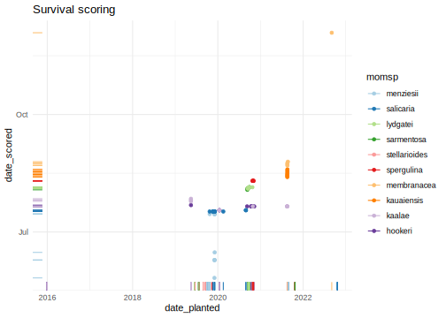

library(tidyverse)
library(glmmTMB)
library(broom)
library(emmeans)
library(knitr)
knitr::opts_chunk$set(comment="", cache=T, warning = F, message = F, fig.height=8, fig.width=8,
fig.path = "figures-comp/", dev = "svglite", dev.args=list(fix_text_size=FALSE))
options(digits=4, knitr.kable.NA = "")
ggplot2::theme_set(theme_minimal())Inventory
sp_pairs <- c("hookeri", "kaalae",
"kauaiensis", "membranacea",
"lydgatei", "sarmentosa",
"menziesii", "salicaria",
"spergulina","stellarioides")
germ.pot <- read_tsv("data/Pollen competition - germination.tsv") %>%
mutate(dadspm = if_else(type=="mixed" & dadsp1==momsp, dadsp1, dadsp2), #rearrange dad1/dad2 to have dadsp match momsp
dadidm = if_else(type=="mixed" & dadsp1==momsp, dadid1, dadid2),
dadsp = if_else(type=="mixed" & dadsp1==momsp, dadsp2, dadsp1),
dadid = if_else(type=="mixed" & dadsp1==momsp, dadid2, dadid1), .after=momid) %>%
select(-starts_with("germinated_n"), -transplanted_n, -matches("dad(sp|id)[12]")) %>%
mutate(across(where(is.character), factor), type = fct_relevel(type, "intra"),
across(matches("sp"), ~ factor(.x, levels = sp_pairs)),
germinated = ifelse(germinated > planted, planted, germinated)) #TODO see if these are data entry errors
germ <- germ.pot %>% group_by(date_planted, type, momsp, momid, dadspm, dadidm, dadsp, dadid) %>%
summarize(planted = sum(planted), germinated = sum(germinated), .groups="drop") %>% # add together all the pots of one cross
mutate(prop.germ = germinated/planted) # proportion of planted seeds that germinated
surv <- read_tsv("data/Pollen competition - survival.tsv") %>%
mutate(dadspm = if_else(type=="mixed" & dadsp1==momsp, dadsp1, dadsp2), #rearrange dad1/dad2 to have dadsp match momsp
dadidm = if_else(type=="mixed" & dadsp1==momsp, dadid1, dadid2),
dadsp = if_else(type=="mixed" & dadsp1==momsp, dadsp2, dadsp1),
dadid = if_else(type=="mixed" & dadsp1==momsp, dadid2, dadid1), .after=momid) %>%
select(-matches("dad(sp|id)[12]")) %>%
mutate(across(where(is.character), factor), type=fct_relevel(type, "intra"),
across(matches("sp"), ~ factor(.x, levels = sp_pairs)),
alive = sameasmom + hybrid,
total = alive + dead,
prop.hybrid = hybrid / alive,
prop.dead = dead / total)
surv %>% count(momsp, type, dadsp, name="crosses_surv") %>%
full_join(germ %>% count(momsp, type, dadsp, name="crosses_germ")) %>%
full_join(germ.pot %>% count(momsp, type, dadsp, name = "pots_germ")) %>%
mutate(pots_per_cross = pots_germ/crosses_germ) %>% kable()| momsp | type | dadsp | crosses_surv | crosses_germ | pots_germ | pots_per_cross |
|---|---|---|---|---|---|---|
| hookeri | intra | hookeri | 12 | 19 | 64 | 3.368 |
| hookeri | inter | kaalae | 34 | 62 | 108 | 1.742 |
| hookeri | mixed | kaalae | 12 | 8 | 70 | 8.750 |
| kaalae | intra | kaalae | 7 | 19 | 34 | 1.790 |
| kaalae | inter | hookeri | 11 | 68 | 119 | 1.750 |
| kaalae | mixed | hookeri | 10 | 6 | 34 | 5.667 |
| kauaiensis | intra | kauaiensis | 2 | 9 | 19 | 2.111 |
| kauaiensis | inter | membranacea | 1 | 1 | 3 | 3.000 |
| kauaiensis | mixed | membranacea | 7 | 8 | 63 | 7.875 |
| membranacea | intra | membranacea | 4 | 6 | 30 | 5.000 |
| membranacea | inter | kauaiensis | 1 | 4 | 18 | 4.500 |
| membranacea | mixed | kauaiensis | 5 | 15 | 60 | 4.000 |
| lydgatei | intra | lydgatei | 5 | 5 | 42 | 8.400 |
| lydgatei | inter | sarmentosa | 19 | 20 | 90 | 4.500 |
| lydgatei | mixed | sarmentosa | 5 | 14 | 61 | 4.357 |
| sarmentosa | intra | sarmentosa | 2 | 2 | 20 | 10.000 |
| sarmentosa | inter | lydgatei | 7 | 9 | 42 | 4.667 |
| sarmentosa | mixed | lydgatei | 5 | 9 | 58 | 6.444 |
| menziesii | intra | menziesii | 7 | 8 | 76 | 9.500 |
| menziesii | inter | salicaria | 19 | 21 | 87 | 4.143 |
| menziesii | mixed | salicaria | 11 | 16 | 82 | 5.125 |
| salicaria | intra | salicaria | 11 | 12 | 98 | 8.167 |
| salicaria | inter | menziesii | 13 | 12 | 53 | 4.417 |
| salicaria | mixed | menziesii | 14 | 24 | 76 | 3.167 |
| spergulina | intra | spergulina | 5 | 8 | 67 | 8.375 |
| spergulina | inter | stellarioides | 4 | 3 | 14 | 4.667 |
| spergulina | mixed | stellarioides | 5 | 10 | 60 | 6.000 |
| stellarioides | intra | stellarioides | 5 | 6 | 26 | 4.333 |
| stellarioides | inter | spergulina | 10 | 7 | 13 | 1.857 |
| stellarioides | mixed | spergulina | 6 | 6 | 28 | 4.667 |
Scoring dates
germ.pot %>% ggplot(aes(x=date_planted, y=date_scored, color=momsp)) + geom_point() + geom_rug() + geom_abline(slope=1, intercept=0) +
scale_color_brewer(palette="Paired") + labs(title="Germination scoring") #TODO check mis-entered dates
germ.pot %>% filter(abs(date_scored-date_planted)<=90) %>% ggplot(aes(x=date_scored - date_planted, fill=type)) + facet_wrap(vars(momsp)) +
geom_histogram(binwidth=1) + scale_x_continuous(limits=c(0,NA)) + labs(title="Germination scoring", subtitle = "plot restricted to 90 days")
surv %>% ggplot(aes(x=date_planted, y=date_scored, color=momsp)) + geom_point() + geom_rug() +
scale_color_brewer(palette="Paired") + labs(title="Survival scoring")